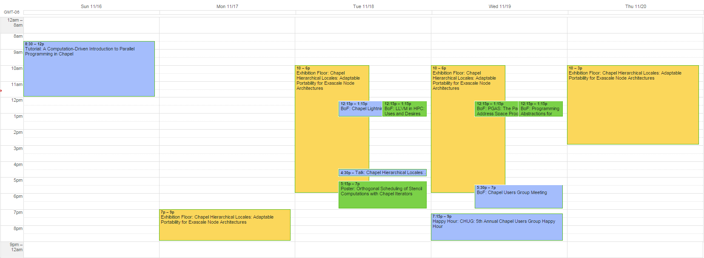

View Chapel SC14 Calendar as:
iCal | HTML
- Tutorial: A
Computation-Driven Introduction to Parallel Programming in
Chapel
-
What? Half-day tutorial introducing Chapel via sample
computations
Who's Organizing? Brad Chamberlain, Greg Titus, Sung-Eun
Choi (Cray), Michael Ferguson (LTS)
Who Can Attend? Anyone with a Sunday tutorial registration
When? Sunday, November 16, 8:30am - noon
Where? room 388
- Exhibition Floor: Chapel Hierarchical Locales: Adaptable
Portability for Exascale Node Architectures
-
What? Exhibit describing Chapel's hierarchical locale
models
Who's Organizing? Greg Titus, Sung-Eun Choi, Brad Chamberlain (Cray)
Who Can Attend? Anyone whose registration gives access to the exhibits
When? Mon 7-9pm, Tue-Wed 10am-6pm, Thurs 10am-3pm
Where? booth #233, exhibition hall
- BoF: Chapel Lightning Talks 2014
-
What? Five-minute talks on Chapel efforts from members of the community
Who's Organizing? Sung-Eun Choi (Cray) and Richard Barrett (Sandia)
Who's Speaking?
- Chapel Overview, Greg Titus (Cray Inc.)
- CoMD in Chapel: The Good, the Bad, and the Ugly,
David Richards (Lawrence Livermore National Laboratory)
- Chapel for Python Programmers: How to stop worrying
and love the curly bracket, Simon Lund
(University of Copenhagen)
- Chapel Iterators: Providing Tiling for the Rest of
Us, Ian Bertolacci (Colorado State University)
- Chapel I/O: Getting to Your Data Wherever It Is,
Timothy Zakian (Indiana University)
- LLVM-based Communication Optimizations for
Chapel, Akihiro Hayashi (Rice University)
- COHX: CHAPEL ON HSA+XTQ (Adventures of a PGAS
Language in a Heterogeneous World), Deepak Majeti (Rice University)
Who Can Attend? Anyone with an SC14 registration
When? Tuesday, November 18, 12:15-1:15pm
Where? room 293
- BoF: LLVM in HPC: Uses and Desires
-
What? Chapel's use of LLVM will be featured as part of a broader panel
Who's Organizing? Hal Finkel (Argonne), Jim Cownie (Intel)
Who's Speaking? Michael Ferguson (LTS) for Chapel
Who Can Attend? Anyone with an SC14 registration
When? Tuesday, November 18, 12:15-1:15pm
Where? room 283-84-85
- Talk: Chapel
Hierarchical Locales: Adaptable Portability for Exascale Node
Architectures
-
What? Talk describing Chapel's hierarchical locale models
Who's Speaking? Greg Titus (Cray)
Who Can Attend? Anyone whose registration gives access to the exhibits
When? Tuesday, November 18, 4:30-5:00pm
Where? Emerging Technologies Theater, booth 233
- Poster: Orthogonal
Scheduling of Stencil Computations with Chapel
Iterators
-
What? Use of Chapel abstractions to support tilings
Who's Presenting? Ian Bertolacci (Colorado State University)
Who Can Attend? Anyone with an SC14 Technical Program Registration
When? Tuesday, November 18, 5:15-7pm
Where? Posters session, New Orleans Theater Lobby
- BoF: Programming Abstractions for Data Locality
-
What? Chapel's locality-oriented abstractions, as part of a broader panel
Who's Organizing? Didem Unat (Koç University), John Shalf (LBNL), Torsten Hoefler (ETH Zürich)
Who's Speaking? Brad Chamberlain (Cray) for Chapel
Who Can Attend? Anyone with an SC14 registration
When? Wednesday, November 19, 12:15-1:15pm
Where? room 391-92
- BoF: PGAS: The Partitioned Global Address Space Programming Model
-
What? an introduction to PGAS models, including Chapel
Who's Organizing? Tarek El-Ghazawi (GWU), Lauren Smith (DOD)
Who's Speaking? Sung-Eun Choi (Cray) for Chapel
Who Can Attend? Anyone with an SC14 registration
When? Wednesday, November 19, 12:15-1:15pm
Where? room 273
- BoF: Chapel Users Group Meeting
-
What? General Chapel information session and open Q&A, discussion
Who's Organizing? the Chapel developer community
Who Can Attend? Anyone with an SC14 registration
When? Wednesdsay, November 19, 5:30-7pm
Where? room 383-84-85
- Happy Hour: CHUG: 5th Annual Chapel Users Group Happy Hour
-
What? Social gathering
Who's Organizing? the Chapel developer community
Who Can Attend? Anyone interested in socializing with Chapel-minded folks
When? Wednesday, November 19, 7:15pm-???
Where? Mulate's, 201 Julia St
{kind=link}